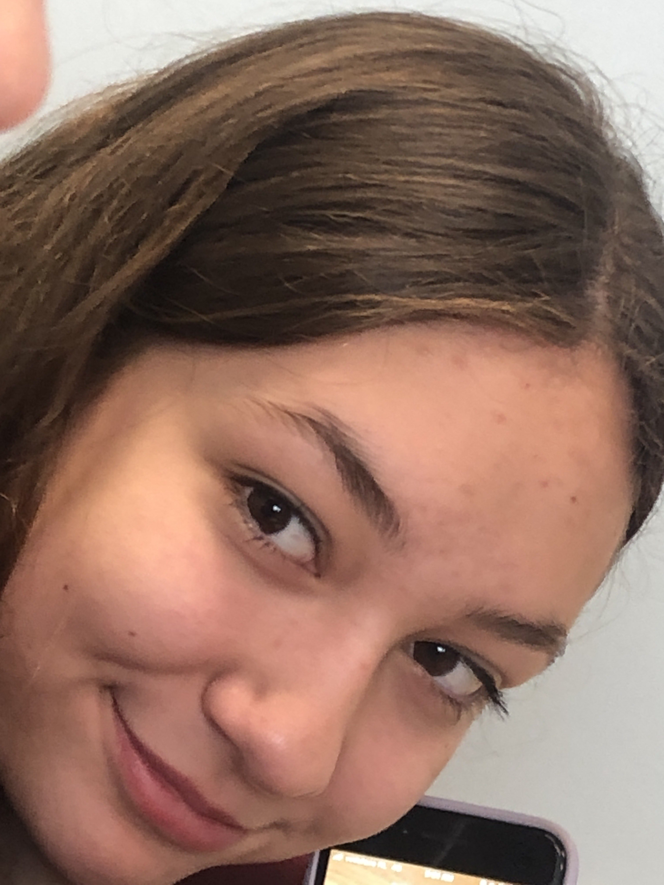

How to catch a wild Danpan
The first thing you'll need to do to catch a wild danpan is create a trap, they usually are more attracted to panini's and Oats 'n Honey Crunchy Granola Bars - Nature Valley than anything else. After you have gotten those items you'll need to place them in a location where the danpan can smell it. Hide behind bushes and trees so the danpan wont see you. Once the danpan has been enticed over and is eating the food, you'll have to grab a net and tie her up.
